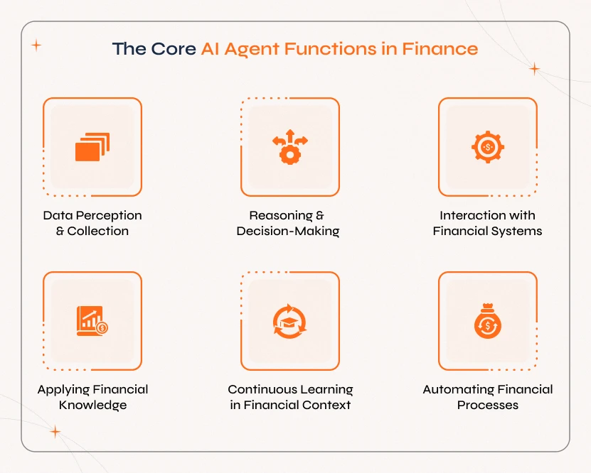
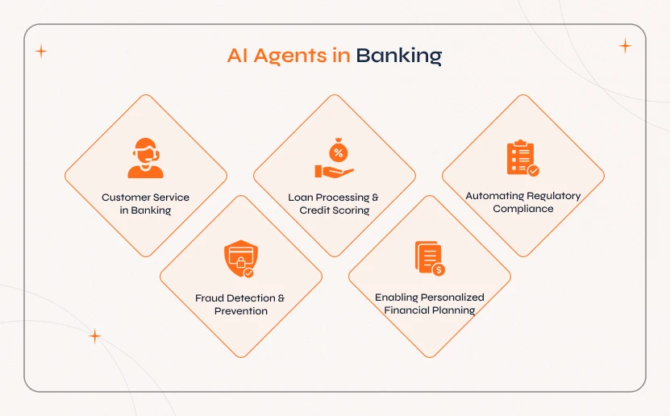
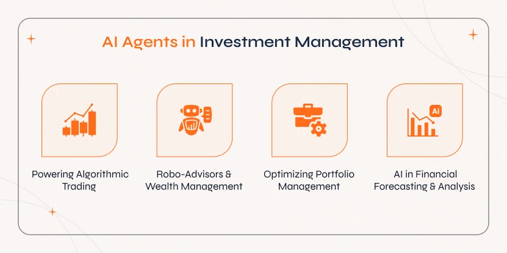
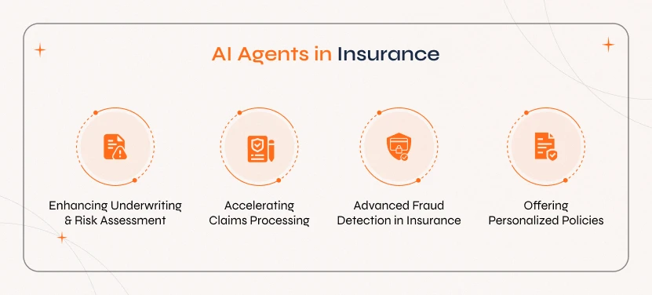
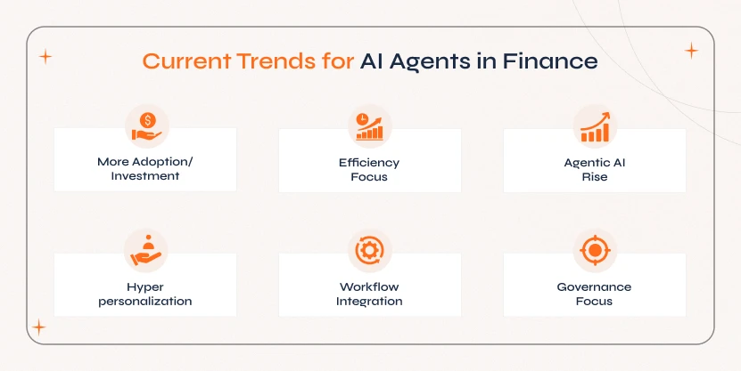
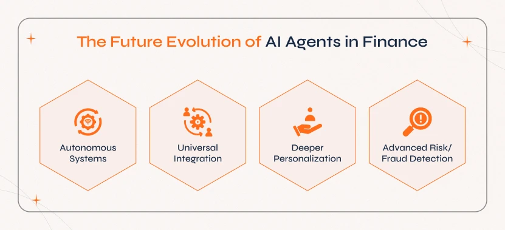

The financial services industry is bang in the middle of a big change, propelled by the rapid advancements in artificial intelligence (AI). At the heart of it all are AI agents, your intelligent workers that can work on their own. AI agents in finance are the future of keeping your customers safe, and understanding them is essential to staying competitive.
In this blog, we will dive deeper into the subject and see how AI gents in finance have evolved and how they can help your business.
What Are AI Agents in Finance
AI agents in financial services can simply be called smart computer programs that can do many tasks. They use AI technology to do these tasks on their own. You can think of them as intelligent digital helpers that don’t need much manual input. Additionally, they can understand their surroundings, make choices, and complete actions. Doing this allows them to reach specific goals you give them.
Defining AI Agents: Going Beyond Simple Automation
What is the real difference between AI agents and traditional AI programs? Let’s see what. Normal AI software usually follows a set of rules. Even if you have an AI model and lots of automation, it still needs human input.
But the level of autonomy or independence that AI agents have is way more. Sort of like human beings. But faster, accurate, and more scalable. They can work on behalf of humans or even other systems without needing constant human guidance.
What Are The Characteristics of AI Agents: Perception, Reasoning, Action, and Learning
An important idea behind AI agents is their ability to be rational and autonomous. They are designed to truly be smart and act smart. AI agents use information they collect and data analysis to make good decisions. These choices help them perform better and reach their goals.
This ability of AI agents to act on their own is a major difference from simpler automation tools. In other words, humans set the main objectives, but the AI agent figures out the best steps needed to meet those goals effectively.
AI agents also interact with their environment. In finance, this is usually within digital systems. Agents are capable of using tools like APIs, databases, or even your questions to get information. After this, they trigger actions inside the software you use.
This can be things like processing a transaction, sending a critical alert, or updating a financial record. AI agents also have key features that help them do these tasks. For example, they can gather data from many places and analyze this data using techniques like machine learning.
This process allows agents to find patterns and anticipate outcomes. After this, they can decide the best action to take to reach their goals. However, instead of telling you what the best course of action is, they carry out these tasks on their own. AI agents get better at making decisions as they get new data and feedback from users.
AI Agents vs Bots and AI Assistants
In 2026, there are lots of names being thrown around, like agents, bots, and assistants. You may wonder what all of them mean because they all sound similar. To understand them better, let’s break things down.
1. Bots or Simple Chatbots
Bots are very simple. They follow predefined rules or scripts to give you outputs to your inputs. Because of this, they have limited ways to interact and usually don’t learn much, if at all. Chatbots that give answers to questions based on keywords are a good example.
2. AI Assistants and Advanced Chatbots
AI assistants are smarter than simple bots. If you’ve ever used Alexa or Siri, you know what an AI assistant is. ChatGPT and Gemini are also AI assistants, just a lot smarter. They use an AI model to understand natural human language and can generate outputs in natural human language.
You could say that the AI model is the assistant’s brain. They can retrieve your data or do simple/basic tasks. This is why assistants are usually part of a larger software. They can even suggest actions to perform, but you are the one usually making the final decision.
As they are less autonomous and operate with limited decision-making, AI assistants often come with less investment compared to fully autonomous agents. Thus, the cost of AI agents becomes an important factor for businesses that want to scale their automation.
3. AI Agents
Indeed, AI agents are the most advanced form of AI assistants. This is just like humans, they have higher levels of independence. Unlike bots and typical assistants, they can handle complicated tasks that involve many steps.
AI agents can also learn from their experiences and can change what they do based on situations. They can make their own decisions to actively work towards their goals.
The main differences between AI agents vs Bots and AI assistants are how much work agents can do on their own, how complex the tasks they handle are, and their ability to learn and change. For all these feature set, it may seem like the cost of AI agents is usually high, but in return, they offer long-term impact and scalable automation.
The Rise of Agentic AI
Now, let's go much more in-depth into the topic. AI tech has come a long way with agentic AI technology. Agentic AI goes far beyond what we have seen so far from AI systems that just respond to prompts. These systems are often made up of several AI agents working together.
They can understand their environment, think, plan, act, and learn without needing constant human input. These types of AI agents are generally powered by large language models (LLMs). Most agentic AI you see today use LLMs like GPT-4 as their “brain.” This makes them powerful because they can combine this with the ability to plan complex tasks, use additional tools like databases, work together with other AI agents, monitor their progress, and improve their performance.
Agentic AI is very important for the finance sector because it can automate entire processes, not just single tasks. By handling these complex workflows, adapting to real-time data, and making advanced systems, agentic systems can completely change how artificial intelligence in financial services and the sector itself operates.
It could lead to much bigger gains in efficiency and even create new business models. Experts are of the opinion that the agentic AI technology could have a greater impact on economies than the era of the internet.
In a nutshell, AI agents in finance are moving from tools that automate simple tasks to highly independent systems. These agents can collaborate, think on their own, and drive innovation.
The Core AI Agent Functions in Finance

The different types of AI agents that can help financial businesses include sales AI agents, customer service AI agents, and intelligent trading bots. These agents perform a wide range of tasks leveraging machine learning, natural language understanding, and data analysis. Let’s discover what are the main functions of financial AI agents.
1. Financial Data Perception and Collection
AI agents are very good at collecting data from different and diverse financial sources. This can include internal data like transaction histories, customer profiles, and risk databases.
It can also involve external data like market feeds, news, and economic indicators. Financial institutions can collect this data in real time and build a picture of the financial environment. In the earlier days, this required a lot of time, money, and human resources.
2. Financial Reasoning and Decision-Making
AI agents are not only good at gathering data, but they are also exceptionally good at analyzing the data. They do this with the help of complex AI models that can be specifically trained for analyzing financial data.
The agent can identify patterns specific to finance, like market trends and unusual transaction sequences, to find opportunities or anomalies. AI agents evaluate the actions based on the customer’s financial goals, risk levels, and compliance rules. This can lead to choosing optimal steps, like deciding whether to flag a transaction or adjust a portfolio.
3. Interaction with Financial Systems
AI agents are capable of executing actions by interacting directly with financial platforms and tools. This could involve using APIs to process payments, update records in banking systems, or send instructions to trading platforms.
They can operate within the digital infrastructure of financial institutions. This reduces the need to rely on large teams of human resources and boosts efficiency.
4. Applying Financial Knowledge
These are trained extensively with financial domain knowledge or learn to gather this knowledge from everyday interactions. It is a combination of data training and on-the-go learning that works best for AI agents. This includes understanding financial products, market structures, and regulatory requirements.
They can apply this knowledge to interpret data and make relevant decisions as needed. This takes the concept of automation to a whole different level and gives AI agents a much higher level of independence.
5. Continuous Learning in Financial Context
Advanced AI agents are capable of learning from their experiences in the finance sector. This means that they can automatically refine their AI models with new financial data as they encounter new situations and interact with customers.
This can be simple conversions or feedback from customers, market outcomes, or even news. This adaptation is important in dynamic financial markets where the agents can improve the accuracy of tasks like fraud detection or for AI-powered trading bots.
6. Automating Financial Processes
At the core of their capabilities, AI agents are exceptional at performing automated sequences of tasks common in finance. This can range from simple tasks like data entry into financial forms to initiating multi-step workflows like parts of a lean application or compliance check.
Build Custom AI Agents to Automate, scale, and optimize with financial Workflows.

AI Agents in Banking
The banking sector is primed for change by AI agents because it deals with countless transactions, customer interactions, and rules to follow. The role of AI in banking is immense and gaining traction.

Revolutionizing Customer Service in Banking
Customer service, as we have talked about earlier, is a very clear use case for AI agents. Now more than ever, AI-powered chatbots and critical assistants are a common sight. They can handle normal customer questions at any time of the day or night.
These solutions are so powerful that they can even check account balances or confirm transaction details. And more advanced assistants can do all this with natural language. Meaning that your customers can talk to the AI agent and get what they need, just like talking to a human agent.
AI agents in banking customer service have lots more potential than just answering customer questions. They can offer personalized financial advice, help solve problems, manage account settings, and even start transactions. This level of automation means fast solutions for customers and improvement in satisfaction. To implement these capabilities, banks usually collaborate with reputed AI agent development companies that can tailor solutions to their unique needs and regulatory environment.
Strengthening Fraud Detection and Prevention
AI agents are like your own private security force against financial crime. These AI agents can make use of machine learning to analyze huge volumes of transaction data in real time. They can find minute patterns or activities that are out of the ordinary. Details that may indicate fraud, unauthorized logins, or unusual spending.
These AI agents are capable of processing hundreds of thousands of transactions a second and analyzing multiple data points for each transaction. Not only does this reduce fraud and malicious activities, but it also reduces the chances of false positives.
Streamlining Loan Processing and Credit Scoring
The loan processing department is a major area where AI agents can provide value. They can not only make the process faster but also easier for institutions and borrowers. AI agents can be highly efficient when it comes to tasks like background and income verification.
For credit scoring, AI can go through more types of data than the old models of scoring did. This includes factors like spending habits, bill payments, and even data from other sources outside of the typical scoring criteria.
This helps create more accurate and fair credit assessments, leading to faster approval times. In some cases, the processing times of AI agent-powered loans can be reduced from days to minutes.
Enabling Personalized Financial Planning
Financial planning has been inaccessible to many people for a long time. This is not just because of a lack of financial literacy, but also because it is expensive. AI agents can solve this and go beyond basic financial planning services.
Using AI agents in financial advisory can provide customers with personalized financial planning on a 24/7 basis. They can look at a customer's financial data, like how they spend, how they earn, their financial goals, and how much risk they are okay with, to offer tailored advice.
This is a great solution for banks that need to showcase their financial products to customers. In the earlier days, providing customers with financial advice required a lot of resources, like workforce, certifications, and it was expensive. With AI agents, a compliant system can help customers cost-effectively.
Automating Regulatory Compliance (AML/KYC)
AI agents can automate important tasks for following regulatory rules. This can be checked for anti-money laundering AML and verifying customers (KYC). Just like detecting fraud, these agents can analyze transactions for suspicious activities.
They can analyze customer actions that might suggest money laundering and automate the data collection or KYC. These agents can also help create reports that regulators need, which makes things more accurate. Agents reduce the manual work it takes for these tasks and help banks keep track of changing rules.
AI Agents in Investment Management
In the fast-paced world of investment management, AI agents come in offering speed, analytical capabilities, and personalization.

Powering Algorithmic Trading
Not many people might realize this, but AI agents are the technology behind high-frequency trading (HFT) systems. They can analyze huge amounts of market data in real time, including news and even social media sentiment. They are able to find opportunities and make trades incredibly fast.
Human agents are not able to match this speed, and these agents can profit from small, quick market differences. They do this by using complex strategies based on data, which reduces decisions based on emotion.
The Growth of Robo-Advisors and Wealth Management
A robo-advisor is a new kind of AI agent platform that can give customers automated and personalized investment advice. They are capable of managing investment portfolios by analyzing the customer’s financial situation, goals, timeline, and how much they accept risk.
Then they can build and manage diversified investment portfolios. Some real-world examples are intelligent investment portfolios from Wealthfront and Charles Schwab. This technology makes investment advice easier and cheaper for more people.
Optimizing Portfolio Management
Beyond robo-advice, AI agents are capable of helping human portfolio managers as well as operating autonomously. They constantly watch how investments are performing, analyze market conditions as they happen, and find chances to invest or the risks.
After this, these AI agents automatically adjust investments to match goals and risk levels.
AI in Financial Forecasting and Analysis
Machine learning in finance is excellent at processing large volumes of financial data. They can find complex trends and predict market movements, and also forecast cash flows or revenues using AI-driven predictive analytics in finance.
They can analyze the mood of the markets from news and social media to understand market sentiment. With this, these AI agents automate the creation of detailed financial reports and provide insights that help with planning. By partnering with AI agent development company with deep expertise in financial advisory automation, banks can build intelligent and secure systems.
Transform your strategies with our AI agent, from trading to portfolio optimization.
AI Agents in Insurance
The insurance industry uses AI agents to get better at checking risks, handling claims, fighting fraud, and offering personalized products.

Enhancing Underwriting and Risk Assessment
AI agents can automate and improve the process of checking and approving insurance applications. They are capable of analyzing lots of data like customer details, past claims, and data from sensors (like in cars) or images (for property).
AI agents can also look at medical records, which helps them check risk more accurately and quickly. This means more precise pricing for premiums based on individual risk, and insurance policies can also be issued faster.
Accelerating Claims Processing
The process of handling insurance claims can become much faster and more automated than before with AI agents. An Agent will be able to automate claims information collection, check details against policy rules and other databases, and check damages using computer vision to analyze photos or videos.
Detecting fraudulent claims becomes much easier, and simplifies the initial checks and approvals to trigger payments. This dramatically cuts the time it takes to process claims, from weeks to days or even hours. It lowers costs and makes policyholders happier.
Advanced Fraud Detection in Insurance
Like in banking, AI agents analyze claims data and customer information. They are able to look for things that seem abnormal or suspicious and point out fake claims. Machine learning models constantly learn new ways people try to commit fraud.
This makes finding fraud more accurate, and also lowers the money lost by insurance companies. Zurich uses AI for this.
Offering Personalized Policies
AI agents analyze customer data like their background, behavior, lifestyle specifics, and risk level. Then agents can recommend insurance products, coverage levels, or extra options that are tailored to them. They can also remind customers when policies need to be renewed.
AI Agents in Regulatory Compliance (RegTech)
Technology for following regulations, called RegTech, uses AI agents. This helps financial institutions handle complex and changing rules more easily and effectively.
Automating Compliance Tasks
AI agents can automate many tasks for following regulations, including watching transactions for AML and verifying customers (KYC). They can also screen for sanctions, check data for reports, and keep records for audits.
This reduces the manual work for compliance teams and lowers errors and costs. It also helps ensure reports are sent on time. Additionally, they can use natural language processing to analyze legal and rule documents.
Monitoring Evolving Regulations
AI agents can constantly check websites for regulators, news, and legal databases. They are able to track even small changes in laws and regulations in real-time. They can alert compliance teams to important updates. This helps make sure the company's policies are changed as needed.
Risk Assessment for Compliance
AI models can analyze company data and practices, and check them against the rules. This helps find possible gaps or areas where the company is at high risk of non-compliance. This allows companies to fix potential problems before they happen.
Current Trends for AI Agents in Finance
AI agent technology is changing faster than anything we have seen so far. Inventions like the internet took years to become what it is today. But AI agents are changing the status quo. Learning how to build AI agents is becoming a must-have for businesses, especially in finance.

1. More Adoption/Investment:
Companies are way past doing trials and are actively using AI agents for automating finance operations.
2. Efficiency Focus:
The use cases of AI agents aim to automate internal tasks, boost efficiency, lower costs, and improve rule following. This has made AI agents very lucrative to financial businesses globally
3. Agentic AI Rise:
Tools in this space are developing fast, with systems working independently towards goals getting popular. Tools like these are getting past the pilot project stage with big global investments.
4. Hyperpersonalization:
Using AI data analysis to give a very tailored customer experience is a major trend for improving customer satisfaction and competitiveness.
5. Workflow Integration:
Agents are being built into existing systems to help human agents and improve the entire process. The idea of an AI copilot is being adopted everywhere in the workplace.
6. Governance Focus:
Managing risks like bias and security is key, and strong AI management frameworks and bias reduction are being developed.
Leverage the power of AI to boost efficiency, enhance personalization, and streamline workflows.
Limitations of AI Agents in the Finance Sector
Eventhough Ai agents are powerful in finance, they still come with real time limitations that businesses can’t ignore. Understanding these gaps helps teams to use AI responsibly without risking compliance, accuracy, and trust.
Limited Context Awareness
AI agents in real-world can process the numbers fast, but still struggle with understanding real-world context. This includes sudden market sentiments and geopolitical evcents, makin the decisions unreliable during unpredictable situations.
Dependency on Data Quality
When the financial data fed into the system is incomplete or inaccuratem the agent’s prediction will fall apart. Also, evem a small data error will lead to huge mistakes in forecasting and risk scoring.
Lack of Human Judgement
Finance and banking sectors usually needs intuition, experience, and emotional understanding. AI agents, on the other hand can’t fully grasp ethical considerations and complex human scenarios, limiting decision-making in critical cases.
Regulatory & Compliance Gaps
The financial regulations will change often and not always machine readable. On the contrary, AI agents will struggle to keep up, and misalignment with compliance rules will expose organizations to legal and operational risks.
The Future Evolution of AI Agents in Finance
AI agents will dominate the finance industry and send ripples across the industry. Let’s see what we can expect from this technology moving forward.

1. Autonomous Systems:
AI agents for investment decision making and banking is on its way to push operations towards more independence and handling a large share of tasks and decisions.
2. Universal Integration:
In the future, AI agents will be an integral part of every industry, built into processes and interactions. Sort of like how we see electricity today.
3. Deeper Personalization:
AI agents will act as proactive, personalized financial advisors that can predict the needs of customers and manage finances. Virtual advisors are likely to handle most routine customer service operations.
4. Advanced Risk/Fraud Detection:
AI will continue to get better at checking risks and finding new threats. Combining AI with quantum computing could bring major breakthroughs in risk analysis in the future.
Conclusion
AI agents are already changing financial services in a big way because these agents can understand customers, act independently, and learn from their surroundings. They have the potential to reshape functions of finance like banking, investment, insurance, and compliance.
Companies are not just exploring this technology, they are adopting it. And businesses in 2026 cannot be left behind if they want to compete in the global stage. With massive investments being made in technology and rapid advancements, AI agents are the invention of the future.
Yokesh Sankar, COO at SparkoutTech